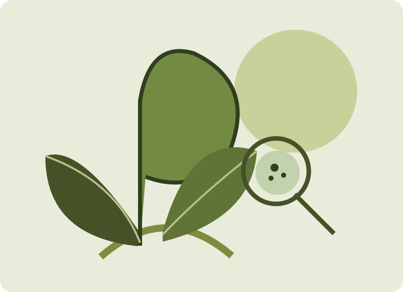

Nature-based programmes
Nature Walks & Sensory Exploration
Walks with prompts for noticing local biodiversity, textures, sounds and relationships between species.
How these sessions workThere is more than one way to engage with nature. Our sessions can be held outdoors or brought into suitable indoor spaces.
Programmes are co-planned around participant interests, learning needs and the setting, rather than fixed as a single activity list.
Walks with prompts for noticing local biodiversity, textures, sounds and relationships between species.
How these sessions workUse natural materials to investigate buoyancy, light refraction, floating, sinking, decomposition, water flow and other age-appropriate science ideas.
How these sessions workGentle noticing, sensory invitations and reflections that bring attention to the present moment.
How these sessions workPlant care, sowing, potting, watering and shared garden tasks shaped around the abilities and goals of the group.
How these sessions workUse twigs, fallen leaves and natural materials for creative work, group play and social interaction.
How these sessions workAdapted nature activities that create opportunities for children, adults and seniors to share knowledge and work together.
How these sessions workShort experiences in parks or suitable indoor spaces that support pause, reflection and social connection.
How these sessions workBring nature-based learning to accessible indoor spaces using prepared plant materials and simple equipment.
How these sessions workFor a preschool group, the same leaf may lead to playful sorting and colour matching. For schoolchildren, it may lead to questions about light and plant functions. For seniors, it could become part of a familiar gardening routine or sensory reflection.
What changes is the support, pace, level of challenge and expected outcome.

Tell us your age group, outcomes and space. We can recommend an activity mix.